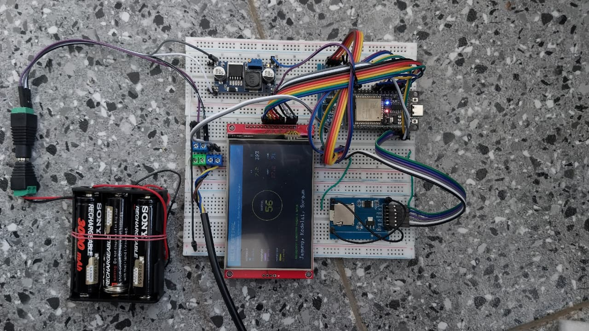
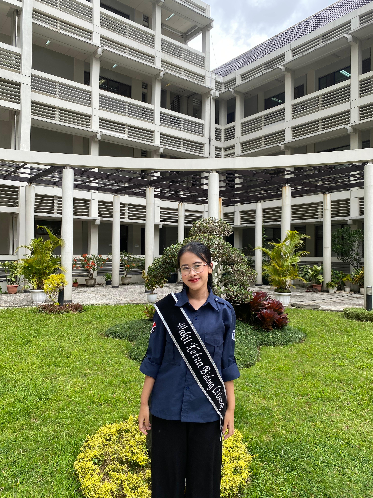

Tentang Kami
Mengenal lebih dekat tim inovator dan teknologi di balik SoilSense.
Smart Soil Scoring
Perangkat IoT (Internet of Things) terintegrasi yang kami kembangkan secara mandiri. Dilengkapi dengan probe sensor NPK, pH, EC, Kelembapan, dan Suhu yang tahan banting untuk penggunaan di lahan pertanian terbuka.
- Mikrokontroler ESP32 Dual-Core
- Transmisi Data Real-time (IoT)
- Casing Tahan Cuaca (Weatherproof)

Tim Inovator SoilSense

Faathir Abid Firdaus
Project Manager & HardwareBertanggung jawab atas perancangan arsitektur IoT dan integrasi kelistrikan sensor presisi.

Afrizal Fahd Fhadillah
Design Casing/Box PanelFokus pada pengembangan desain casing dan box panel untuk perangkat IoT.
Kamila Mecca Dewi
Agronomy SpecialistFokus pada studi dan analisis data pertanian untuk mendukung pengembangan solusi IoT.
Nabila Maharani
Agronomy SpecialistFokus pada studi dan analisis data pertanian untuk mendukung pengembangan solusi IoT.
Nazwa Nurul Azizah Putri Haryani
Agronomy SpecialistFokus pada studi dan analisis data pertanian untuk mendukung pengembangan solusi IoT.
Pika
Agronomy SpecialistFokus pada studi dan analisis data pertanian untuk mendukung pengembangan solusi IoT.
Siti Hafshoh
Agronomy SpecialistFokus pada studi dan analisis data pertanian untuk mendukung pengembangan solusi IoT.

Rasya Arinta Aulia
Agronomy SpecialistFokus pada studi dan analisis data pertanian untuk mendukung pengembangan solusi IoT.
Yudhistira Aulia Chandra
Agronomy SpecialistFokus pada studi dan analisis data pertanian untuk mendukung pengembangan solusi IoT.
Bagus Dwi Rahardiansyah
Agronomy SpecialistFokus pada studi dan analisis data pertanian untuk mendukung pengembangan solusi IoT.
Eka Fitrotul Uyun
Agronomy SpecialistFokus pada studi dan analisis data pertanian untuk mendukung pengembangan solusi IoT.